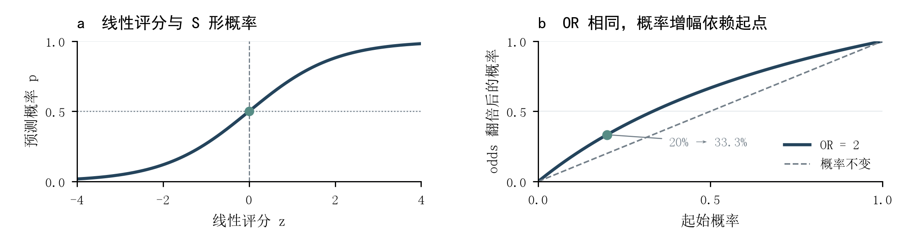

生物医学数据科学 · 方法简报评分、概率与解释
线性分类模型的概率建模与决策评价
Logistic 回归与 LDA 的方法学比较及心脏病教学数据审计
摘要 Logistic 回归与线性判别分析（LDA）均可输出概率和线性分类边界，但建模对象、估计目标与假设不同。本文以线性评分为起点，解释条件概率建模、类条件高斯分布、优势比、参数规模及错误代价，并对当前心脏病教学文件进行描述性审计。270 条记录包含 120 条阳性和 150 条阴性；13 项输入中有 9 项存在缺失，183 条记录至少缺失一项输入。报告据此提出训练折内预处理、开发集样本外比较、阈值冻结和独立测试的验证框架。模型选择应同时考察排序、概率质量、行动错误及估计稳定性；内部预测证据不能自动支持因果或临床部署结论。
关键词：线性判别分析；Logistic 回归；优势比；概率校准；无泄漏验证；错误代价
1 研究问题：从评分走向决策
疾病二分类包含三个不同层次：综合检查指标形成评分，估计类别概率，再按阈值采取行动。普通线性回归主要描述连续结局的条件均值，输出不受 0 到 1 限制；Logistic 回归与 LDA 则通过概率模型连接特征与类别。本文聚焦三者中的后两种方法，并将疾病存在识别与未来发病预测、关联解释与因果识别区分。[1–3]
1.1 线性评分与截距
z = β₀ + xᵀβ(1)
x 是一名受试者编码后的输入，β 是权重，β₀ 是截距。截距表示所有输入处于编码零点时的评分；标准化变量的零通常是训练均值，参考编码的全零表示参照类别。截距对应的基准概率不必等于总体患病比例。固定评分门槛在二维输入空间形成直线，在更高维形成超平面。
2 Logistic：直接学习条件概率
p = σ(z) = 11 + exp(−z)(2)
Sigmoid 将实数评分映射到 0 与 1 之间；z＝0 对应 p＝0.5。概率 p 的 odds 为 p／(1−p)，对其取自然对数得到 logit：ln[p／(1−p)]＝z＝β₀＋xᵀβ。Logistic 设定的是 logit 对输入线性，概率随单个线性预测量可呈 S 形变化。以 t 为概率阈值时，p≥t 等价于 z≥ln[t／(1−t)]，因此固定阈值对应固定线性评分边界。需要 U 形或交互关系时，可增加非线性变换或交互项，并通过开发验证检查其价值。

LINEAR CLASSIFICATION · METHODS AND EVIDENCE01